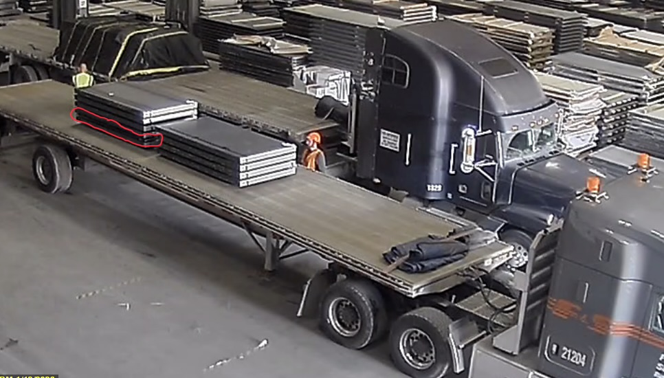
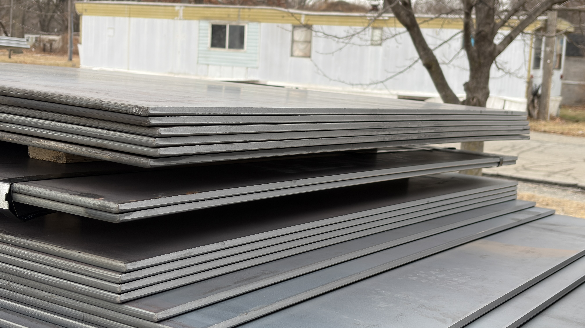
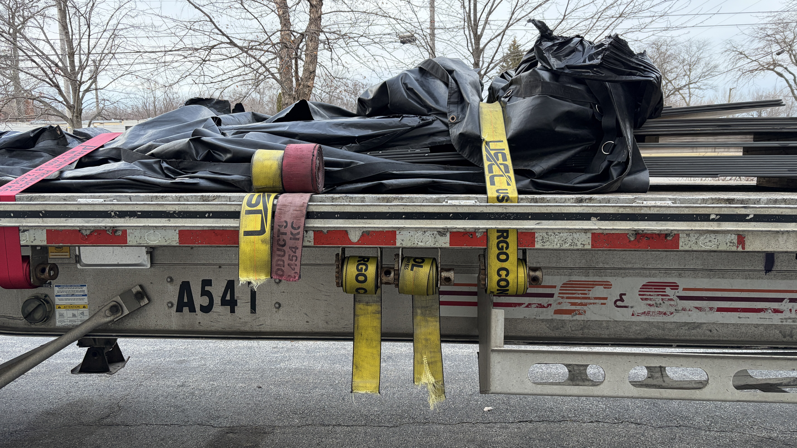
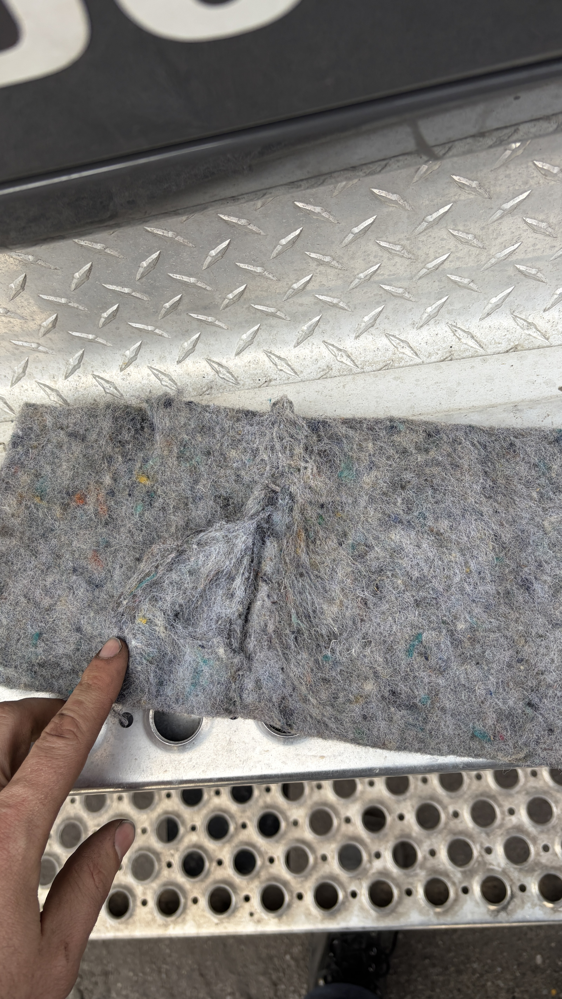

Executive Summary
This incident was caused by a Latent Loading Defect (a structural "slip-plane") created by the shipper. Under the Savage Rule (Indiana Supreme Court, Wilkes v. Celadon), the carrier/driver is not liable for internal cargo failures that cannot be discerned by reasonable external inspection. The following evidence demonstrates that securement exceeded federal standards and failed only due to the internal collapse of the stack.
Recorded Admission of Fault
During a post-incident meeting, the loader (Mike) admitted to identifying the stacking defect prior to departure but failing to rectify it.
Key Transcript Segment:
"I can move the 2-layer, but..." — Mike (Shipper's Agent) acknowledging the stacking error.
Visual Evidence & Physics Analysis

Exhibit A: Pre-Departure Stacking.
Note the "10-2-10" sequence. Placing a thin 2-sheet layer (approx. 1,000 lbs) beneath a 40-sheet block (approx. 20,000 lbs) creates a friction-coefficient failure point (slip-plane).

Exhibit B: Point of Failure.
Evidence of "Telescoping." The stack remained intact below the 2-sheet layer, while everything above it slid forward. This confirms the failure was internal to the stack, not a failure of the trailer or external securement.

Exhibit C: Securement Effort.
The 4 severed straps demonstrate the violent force of the internal shift. The 32,400 lbs WLL was sufficient for a stable load but was overcome by the kinetic energy of the "slip-plane" collapse.

Exhibit D: Edge Protection.
Evidence that the driver utilized industry-standard edge protection (felt pads) to meet FMCSA § 393.104(f)(4). The tear confirms the straps were under maximum tension until the internal cargo shift occurred.
Securement Math (FMCSA § 393.102)
Total Load Weight: 46,000 lbs
Required WLL (50%): 23,000 lbs
Actual WLL Applied: 32,400 lbs
-----------------------------------
RESULT: 140% OF FEDERAL REQUIREMENT
The securement was mathematically over-engineered. The escape of cargo was purely a result of structural instability in the shipper's stacking method.
I, Zack Moritz, certify that the media on this page are original, unaltered recordings and photographs taken by me. This evidence is provided for the purpose of pre-trial dismissal of Citation #000167445607.